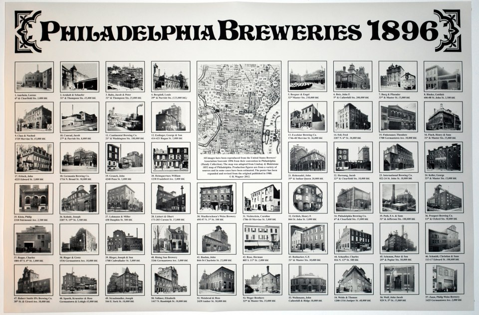
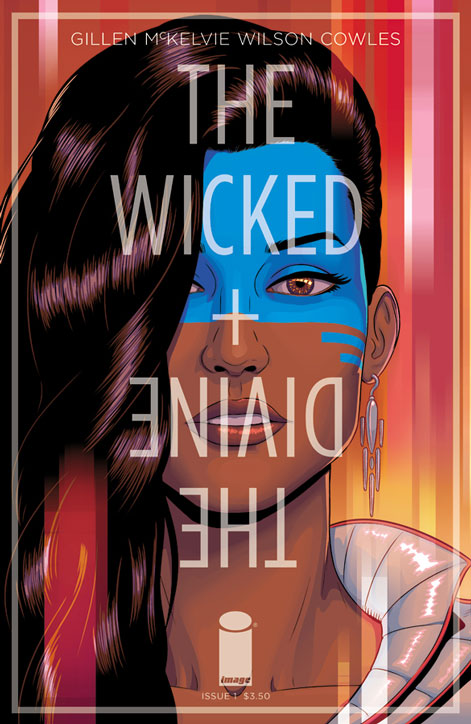
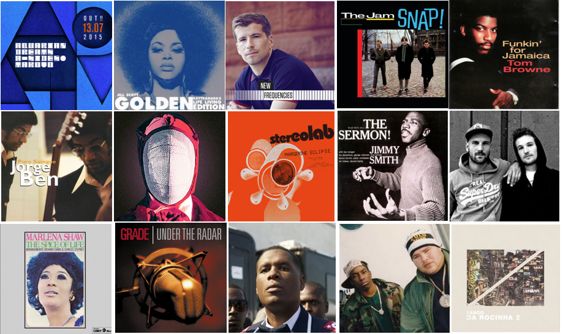

Team Brewerytown

Girl Develop It
Coded by Kids Instructor
My Favorites: Futurama
My Favorites: Golden Girls
My Favorites: Comics

My Favorites: Hiking
Cleveland National Forest: Three Sisters Falls
My Favorites: Philly's Wonderful Food Scene

Some cool CSS3 Transitions
http://codepen.io/montanaflynn/pen/orxwK